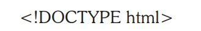

O Doctype deve ser a primeira linha de código do documento antes da tag HTML.
O Doctype indica para o navegador e para outros meios qual a especificação de código utilizar. Em versões anteriores, era necessário referenciar o DTD diretamente no código do Doctype. Com o HTML5, a referência por qual DTD utilizar é responsabilidade do Browser.
O Doctype não é uma tag do HTML, mas uma instrução para que o browser tenha informações sobre em qual versão de código a marcação foi escrita.
| Elemento | Descrição |
| <section> | Representa um documento genérico ou seção da aplicação. Pode ser usado em conjunto com os elementos <h1>, <h2>, <h3>, <h4>, <h5>e <h6> para indicar a estrutura do documento . |
| <article> | Representa uma peça independente do conteúdo de um documento, como um blog ou artigo de jornal |
| <aside> | Representa uma parte do conteúdo que é pouco relacionado com o resto da página |
| <hgroup> | Representa o cabeçalho de uma seção |
| <header> | Representa um grupo de introdução ou cabeçalho de uma seção |
| <footer> | Representa um rodapé de uma seção e pode conter informações sobre o autor, direitos autorais, etc |
| <nav> | Representa uma seção do documento destinada à navegação |
| <figure> | Representa uma parte do conteúdo de fluxo auto suficiente |
| <figcaption> | Representa um rótulo para o elemento <figure> |
| <audio> e <video> | Representa conteúdos multimídias. Ambos fornecem uma API que pode ser acessada pelos desenvolvedores por scripts JavaScript |
| <embed> | Representa conteúdo incorporado, como um plugin |
| <mark> | Representa um texto marcado ou destacado para fins de referência |
| <progress> | Representa o estado de um trabalho em andamento ou a conclusão de uma tarefa como, por exemplo, um download. |
| <meter> | Representa uma medida, como uso do disco. Deve ser usada somente se os valores máximos e mínimos são conhecidos. |
| <time> | Para definir data, hora ou ambos. |
| <ruby>, <rt> e <rp> | Define a marcação de anotação para um texto base em idiomas orientais com o objetivo de definir a pronúncia correta do texto base ou informar sobre ele. |
| <bdi> | Representa o intervalo de texto que deve ser isolado de seu entorno para efeitos de formatação de texto bidirecional. |
| <wbr> | Representa uma oportunidade (possibilidade) de quebra de linha. |
| <canvas> | É utilizada para renderização de gráficos bitmap dinâmicos, como gráficos ou jogos. Isso é feito por meio de scripts JavaScript. |
| <command> | Representa um botão ou botão de opção, ou uma caixa de seleção que o usuário pode invocar. |
| <details> | Usado para descrever os detalhes de um documento ou partes dele. |
| <datalist> | Juntamente com o novo atributo list do elemento <input>, pode ser utilizado para criar caixas de combinação. |
| <keygen> | Permite gerar chaves para autenticar os usuários. |
| <output> | Representa os diferentes tipos de saída, como a saída escrita por um script. |